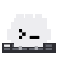
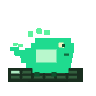
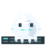
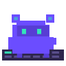

macOS 14+
Codex / Claude / Gemini / OpenClaw / OpenCode 0.1.0
A Dynamic Island for the moments your agents
need you.
Need a quick answer about the next step
8
Island
·
Need a quick answer
Claude Code is waiting for a quick direction before it can continue.
Today's focus
What should we tackle next?
Claude Code needs one small decision before it can keep moving. Pick the path that feels most helpful.
What would you like to do in this project?
Keep shipping
Continue the feature that is already in motion
Fix a bug
Resolve a failing test or smooth out a rough edge
Explore the code
Build context before making the next change
Something else
Describe the outcome you want and we will steer there
Submit

Island
·
Review the hook parser before the next release
You: can you double-check the file mapping?
Opened `Prototype/Sources/IslandShared/HookPayloadMapper.swift`
32s
Codex
Island
·
Tighten the IDE focus return behavior
You: let's make Cursor and VS Code feel more reliable
Exploring `PingIsland/Services/Window/IDEExtensionInstaller.swift`
<1m
Cursor
Island
·
Trace one more launcher edge case before we ship
You: please sanity-check the final routing path
Reading `PingIsland/Services/Window/SessionLauncher.swift`
<1m
Gemini CLI

Island
·
Check the session cache after relaunch
You: make sure the previous client identity is restored
Inspecting `PingIsland/Services/State/SessionAssociationStore.swift`
45s
Qoder

Island
·
Verify the plugin bridge still emits the right events
You: I want to be sure OpenCode stays in sync with the app
Reviewing `PingIsland/Services/Hooks/HookSocketServer.swift`
54s
OpenCode

Island
·
Polish the completion summary before the next demo
You: keep the final summary short, warm, and easy to scan
Drafting copy around `SessionCompletionNotificationView.swift`
1m
CodeBuddy
session trust
Codex hooks + app server sync
focus return
iTerm2, Ghostty, Terminal.app, tmux, IDEs
custom layer
Sound packs, mascots, and per-client identity
Core Features
Built around the interruptions that break deep work.
Attention-first UI
Stay compact until a session needs approval, input, review, or intervention.
Native action loop
Approve tools, deny requests, and answer follow-up prompts without hunting through tabs.
Precise focus return
Jump back to the exact terminal, tmux pane, or IDE window that spawned the run.
Codex-aware sync
Codex hooks, app-server threads, and rollout fallback stay coherent inside one monitor layer.
Custom signals
Map event-specific sounds and give each client a visual identity that feels personal.
Open-source trust
Independent, local, and native. The UI stays transparent because the project is too.
Pet GIF Showcase
One mascot system, all your clients.
Each client carries its own animated personality across the notch, session list, and hover preview.
Install
Start with the release build, or go straight to source.
Release path
Open GitHub Releases.
Download the latest DMG.
Move Ping Island.app into Applications.
Launch and enable the clients you want monitored.
Open Releases
Source path
git clone https://github.com/erha19/ping-island.git
cd ping-island
xcodebuild -project PingIsland.xcodeproj \
-scheme PingIsland \
-configuration Release build
View Repository
Open Source Signal
If Ping Island sharpens your flow, give it a star.
A GitHub star helps more people discover the project.